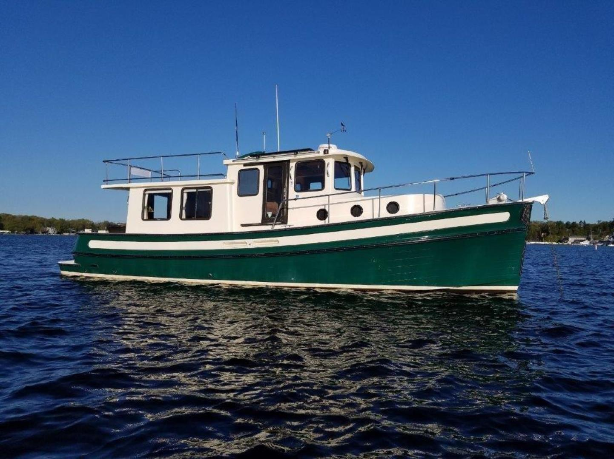

Nordic Tugs 37
1998–2009
The Nordic Tug 37 introduced the builder’s midsize two-stateroom pilothouse platform in 1998. It uses a semi-displacement fiberglass hull, single diesel shaft drive, raised pilothouse and larger salon than the 32, giving a cruising couple substantially more storage and guest capability. The same basic hull later evolved into the Nordic Tug 39 and then the Nordic Tug 40.

- Length
- 39.83 ft
- Beam
- 12.92 ft
- Draft
- 4 ft
- Hull behaviour
- Semi-Displacement
- Fuel
- Diesel
- Propulsion
- Shaft
- Engine configuration
- Single inboard diesel
- Boat family
- Tug
- Construction
- Fiberglass
Best for
- Couples wanting extended-cruising comfort with guest capability
- Pacific Northwest, Great Lakes and coastal cruising
- Owners wanting single-engine simplicity in a substantial pilothouse boat
Trade-offs
- Nearly 40-foot overall length once appendages are included
- Single-engine docking can depend heavily on thrusters and technique
- Larger systems, generator and tankage raise maintenance burden over the 32/34
- Published dimensions vary slightly by production year and measurement convention
Known concerns
- No model-specific concern has been promoted to B-Scout’s evidence threshold. This does not mean the model has no age-, condition- or hull-specific risks.
Inspection focus
- Confirm model year, engine package and factory or owner-added flybridge equipment
- Inspect pilothouse and saloon window sealing and surrounding structure
- Moisture-test deck penetrations, cabin-top hardware and boat-deck areas
- Inspect exhaust, cooling, shaft, rudder and steering systems
- Inspect thrusters, generator, charging systems and owner-added electrical equipment
- Verify tank condition, supports, hoses and access for future replacement
Continue researching
Related boat models
40 ft · Semi-Displacement
44.67 ft · Semi-Displacement
34.92 ft · Semi-Displacement
32.08 ft · Semi-Displacement
26.33 ft · Semi-Displacement
39.83 ft · Planing
About this record
B-Scout preserves uncertainty: missing information remains unknown rather than being treated as a negative. Specifications and guidance describe the model record; individual boats can differ by year, equipment, refit and condition.